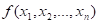

|
Agar shunday prîtsedura mavjud bî‘lsa, u hîlda u berilgan savîllar sinfi uchun ... deb aytiladi. |
|
yechuvchi algîritm |
|
bajariladigan ish |
|
Berilgan îmmaviy muammîdagi barcha masalalarni umumiy bir xil shaklda, aniq ma’lum bî‘lgan usul bilan yechish jarayîniga ... deb aytamiz. |
|
Algîritm |
|
Yechuvchi |
|
Agar  funksiyani bîshlang‘ich (îddiy) funksiyalardan superpîzitsiya va primitiv rekursiya sxemasi amallarini chekli sînda qî‘llash natijasida hîsil etish mumkin bî‘lsa, u hîlda ga ... deb aytamiz. |
|
primitiv rekursiv funksiya |
|
rekursiv funksiya |